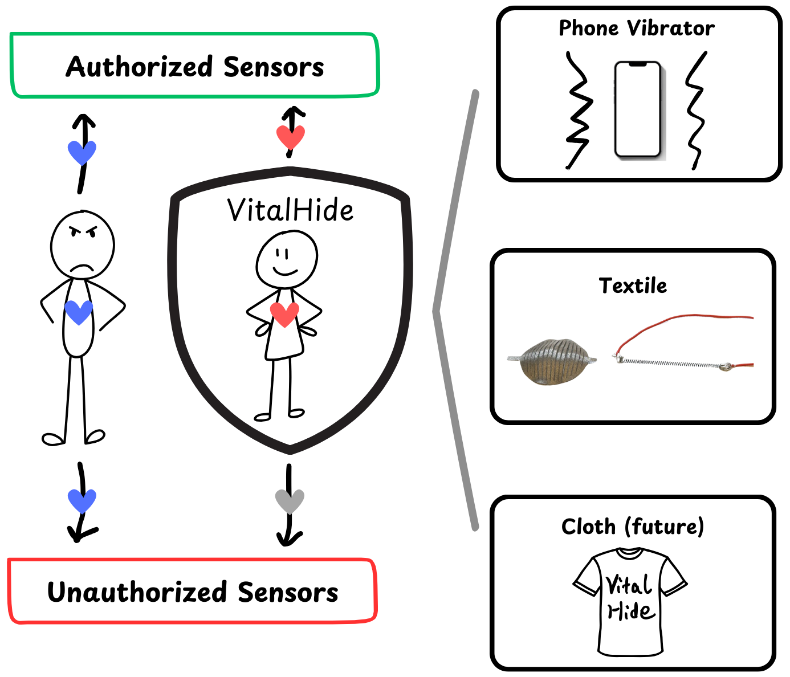
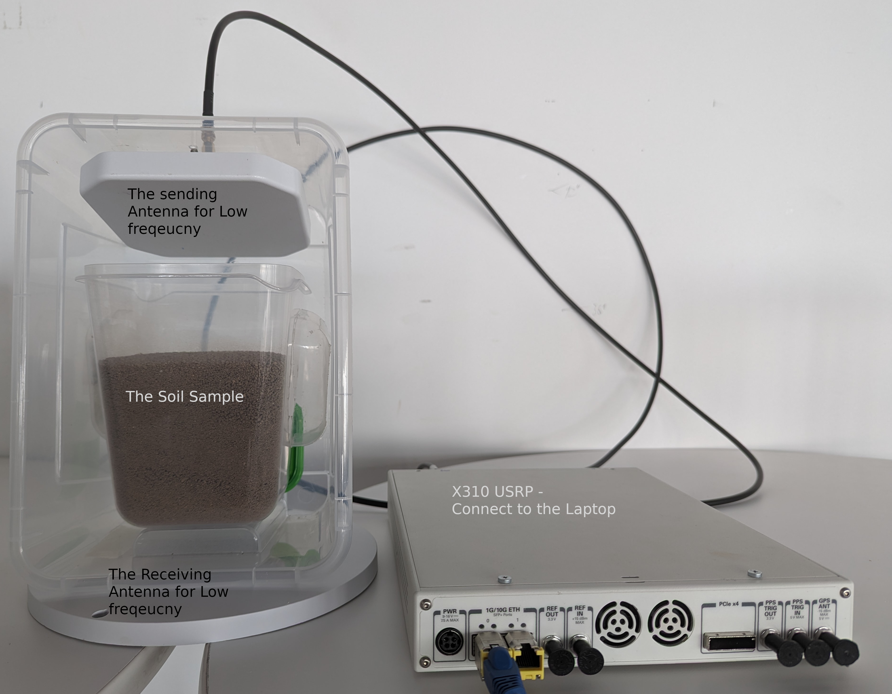
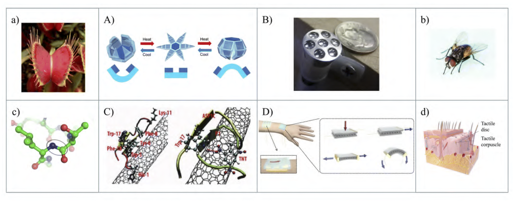
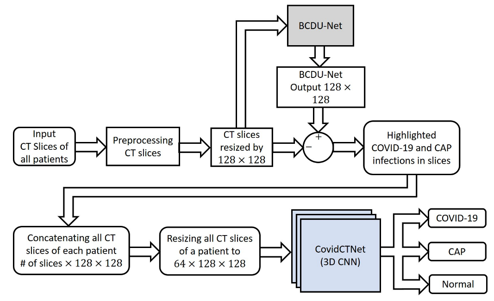

|
Tanvir Ahmed Hi, welcome to my webpage! I'm currently a PhD student at Cornell Tech in New York City, where I explore novel applications of wireless sensing technologies. I am fortunate to be advised by Rajalakshmi Nandakumar, with Deborah Estrin and Noah Snavely on my PhD committee. In summer 2026, I interned with MethaneSAT's Data Platform team at EDF, working on background methane estimation under Sasha Ayvazov's supervision. I am seeking industry AI/ML PhD internships for spring or summer 2027. |
Island Line Trail, Lake Champlain, Vermont. August 2026. |
{kind=link}
NewsJune 2026: 🥳 Our paper mmFHE, on end-to-end encrypted mmWave sensing, was accepted to ACM MobiCom'26! Excited to attend the conference in Austin this October. May 2026: 🌎 I joined EDF's MethaneSAT Data Platform team as a graduate intern through the PiTech PhD Impact Fellowship. I will be working on improving background methane estimation for MethaneSAT’s Level-4 data products. April 2026: 🏛️ My EB-2 NIW petition was approved, recognizing the substantial merit and national importance of my ongoing research in wireless sensing. April 2026: 🎤 Had the opportunity to present my work on secure and trustworthy wireless sensing at Cornell Tech's Digital Life Seminar, w/ Evan Dong (video). May 2025: 🥳 Excited to be awarded the Digital Life Initiative (DLI) Doctoral Fellowship for 2025-26 at Cornell Tech, through which I will receive research support and engage with the broader DLI community! February 2025: 🧑🏫 Our work VitalHide was presented at HotMobile'25 in Palm Springs, CA. December 2024: 🧑🏫 Our work on RF lead sensing in soil was presented at EWSN'24 in Abu Dhabi, UAE (also won the Best Paper Award!!) August 2023: 😭 Started my PhD in Information Science at Cornell Tech, NYC! July 2023: 🎓 Obtained my Masters in EEE from BUET. |
ResearchMy research interests span wireless sensing, signal processing, AI, and healthcare applications. My PhD research is highlighted. |
|
mmFHE: mmWave Sensing with End-to-End Fully Homomorphic Encryption
Tanvir Ahmed, Yixuan Gao, Adnan Armouti, Rajalakshmi Nandakumar ACM MobiCom, 2026 paper / BibTeX mmFHE is the first system to enable the full mmWave sensing pipeline, including DSP and ML inference, homomorphically on encrypted radar data on an untrusted cloud. Raw radar data contains sensitive biometric information that can be used for re-identification, as well as data-dependent privacy attacks. mmFHE is implemented with seven composable, data-oblivious CKKS kernels and supports real-time processing for vital-sign sensing on a commodity GPU. |
|
|
 |
VitalHide: Enabling Privacy-Aware Wireless Sensing of Vital Signs
Yixuan Gao*, Tanvir Ahmed*, Zekun Chang, Thijs Roumen, Rajalakshmi Nandakumar * Equal contribution ACM HotMobile, 2025 paper / BibTeX Related: NYC Privacy Day at Google presentation / ACM Showcase on Kudos VitalHide protects breathing and heart-rate information from unauthorized remote wireless sensing. A wearable device masks true vital-sign signals, making unauthorized sensing unreliable while allowing authorized devices to recover accurate measurements. We demonstrate its feasibility using vibration-based and shape-memory-alloy prototypes. |
|
 |
Feasibility of Radio Frequency Based Wireless Sensing of Lead Contamination in Soil
Yixuan Gao, Tanvir Ahmed, Zhongqi Cheng, Mikhail Mohammed, Rajalakshmi Nandakumar EWSN, 2024 (Best Paper Award) paper / BibTeX Related: Cornell Chronicle / Phys.org / MSN / American Technion Society / KARMACTIVE SoilScanner explores a portable, affordable way to screen soil for lead (Pb) contamination using radio-frequency signals. It combines frequency-dependent signal patterns with machine learning to classify samples as having low or high lead levels. In our evaluation, it achieved 72% accuracy and correctly flagged every sample above 500 ppm. |
Show earlier research (2) Hide earlier research
|
 |
Biomimicry in Nanotechnology: a Comprehensive Review
Mehedi Hasan Himel, Bejoy Sikder, Tanvir Ahmed, Sajid Muhaimin Choudhury Nanoscale Advances, 2023 paper / PMC / BibTeX The integration of biomimicry with nanotechnology has shown promise across medicine, robotics, sensors, photonics, energy, and textiles. This review surveys key advances in these areas and highlights emerging opportunities for nature-inspired design at the nanoscale. |
|
 |
COVID-19 Identification From Lung CT Scans in a Low-Resource Setting Using a Regularized 3D Convolutional Neural Network
Tanvir Ahmed, Mohtasim Nakib, Md Messal Monem Miah, Mohammad Ariful Haque ICECE, 2022 paper / pre-print / BibTeX Identifying COVID-19 from lung CT scans in a low-resource setting using a regularized 3D convolutional neural network. |
Experience |
|
Graduate Intern
MethaneSAT Data Platform Team, Environmental Defense Fund May 2026 - August 2026 Supervisor: Sasha Ayvazov Developed Masked Prediction, a patch-based method for estimating background methane in scenes with spatial gradients. It hides each patch and predicts its background from the surrounding context, preventing plumes within the patch from influencing the estimate. On synthetic scenes generated from real Jacobians, the method reduced mean absolute error by about 70% over the production baseline (0.89 vs. 2.91 ppb). |
|
|
|
Lecturer
Department of Computer Science and Engineering, BRAC University January 2020 - August 2023 Supervisors: Sadia Hamid Kazi and Mahbubul Alam Majumdar Taught courses in image processing, VLSI design, electronic devices, and circuits. |
Miscellanea |
Service |
Reviewer: ACM DIS 2025, ACM CHI Case Studies 2025 Topic Chair: IEEE ECCE 2025 Student Volunteer: ACM HotMobile 2025 |
Awards |
2026: PiTech PhD Impact Fellow (full summer support), Cornell Tech 2025: Digital Life Initiative (DLI) Doctoral Fellowship (research support and related expenses), Cornell Tech 2025: Student Travel Grant Recipient, HotMobile'25, Palm Springs, CA 2024: EWSN'24 Best Paper Award for the paper "Feasibility of Radio Frequency Based Wireless Sensing of Lead Contamination in Soil" 2024: Student Travel Grant Recipient, EWSN'24, Abu Dhabi, UAE (unable to attend due to visa issues) 2023: Photo Contest Winner, "Tech Innovation in Frame" category, Cornell Tech 2019: Undergraduate Degree Awarded with Honors (Cumulative GPA ≥ 3.75), BUET 2015, 2016, 2018: Dean's List Award (Academic Year GPA ≥ 3.75), BUET 2015, 2016, 2017, 2018: University Merit Award, BUET 2017: National Idea Competition, Top 10, Ministry of Power, Energy & Mineral Resources, Bangladesh 2014: National Physics Olympiad, 1st position, St. Joseph Higher Secondary School, Dhaka, Bangladesh 2014: Bangladesh Physics Olympiad, 7th position, Dhaka Divisional, Bangladesh |
Teaching |
Graduate Teaching Assistant @ Cornell Tech:
Lecturer @ Brac University:
|
|
Website template by Jon Barron. Source code here. |